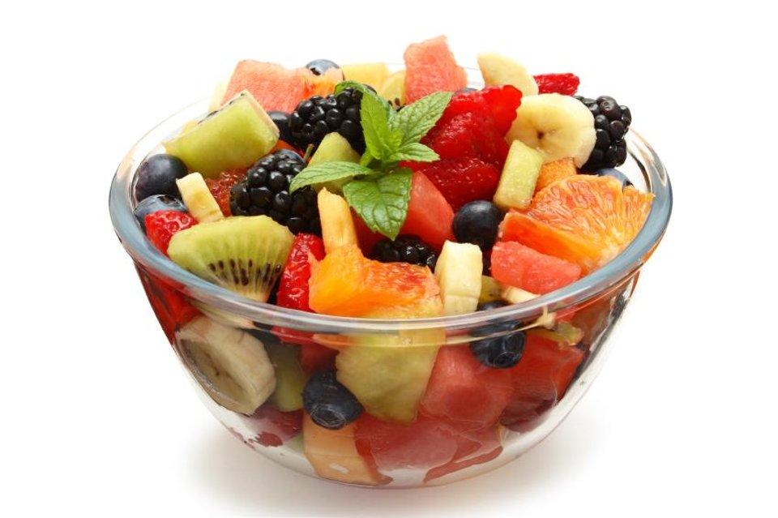
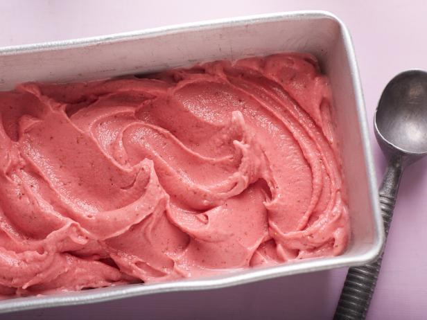
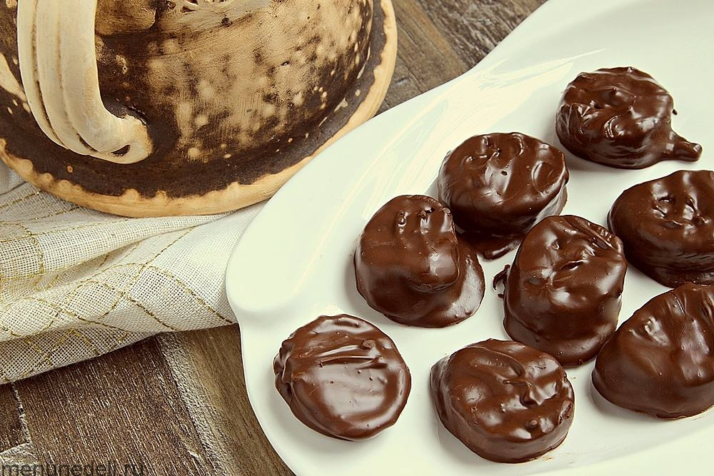
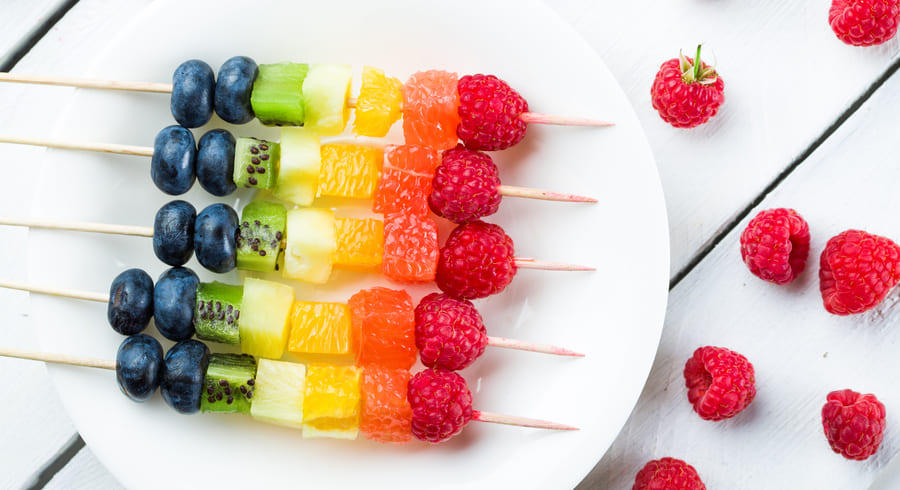

Augļu salāti
Svaigi sasmalcināti augļi sajauc ar medu vai sīrupu.
Sastāvdaļas: Āboli, bumbieri, banāni, zemenes, medus vai sīrups.
Gatavošanas soļi:
- Sagriež augļus.
- Samaisiet tos lielā bļodā.
- Pievienojiet medu vai sīrupu un viegli samaisiet.

Saldēts zemeņu jogurts
Saldēts jogurts sajauc ar zemenēm.
Sastāvdaļas:Zemeņu biezenis, jogurts.
Gatavošanas soļi:
- Sasmalcina zemeņu biezeni un sajauc to ar jogurtu, lej veidnēs un sasaldē.

Ar šokolādi pārklāti banāni
Ar šokolādi pārklāti banāni.
Sastāvdaļas: Banāni, tumšā šokolāde, rieksti.
Gatavošanas soļi:
- Sagrieziet banānus gabalos un uzkarsējiet tos uz kociņiem.
- Pārklāj tos ar tumšo šokolādi.
- Apkaisa tos ar riekstiem.
- Sasaldē, līdz šokolāde ir sacietējusi.
Grauzdiņš ar medu un augļiem
Grauzdēta maize, kas pārklāta ar medu un dekorēta ar sasmalcinātiem augļiem.
Sastāvdaļas: Maize, medus, augļi.
Gatavošanas soļi:
- Apgrauzdē maizi.
- Pārklājiet maizi ar medu.
- Virsū liek sagrieztus augļus.

Augļu kebabs
Sagriezti augļi uz iesmiem ar jogurta un medus mērci.
Sastāvdaļas: Ananāsi, persiki, ogas, jogurts, medus.
Gatavošanas soļi:
- Sagrieziet augļus gabalos un novietojiet tos uz iesmiem.
- Sajauciet jogurtu ar medu un iemērciet kebabus šajā mērcē.